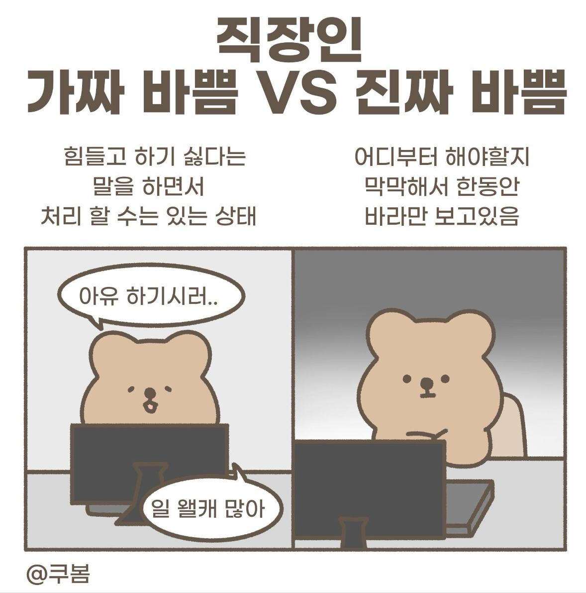

프로젝트의 첫 단추를 잘 끼우는 방법(for FE)

0. 개발을 시작하기 전에
- 킥오프 미팅을 통해 프로젝트에 착수합니다.
- 실무자 구성 확인
- 러프한 기획 내용 검토
- 대략적인 일정 산정
1. 요구사항 이해하기
기획서 리뷰 미팅부터는 요구사항을 면밀히 분석해야 합니다.
- 기획서를 정독하고 기능(Feature)을 리스트업합니다.
- 누락되었거나 논리적으로 맞지 않는 내용은 논의를 통해 정리합니다.
📋 체크리스트
- 필수 구현 기능 (MVP)
- 기능 간 우선순위 (개발 순서)
- API 명세 및 데이터 흐름 (백엔드 협업 여부 포함)
- server-to-server 통신 여부 확인
2. 프로젝트 범위 파악하기
코드 베이스 상에서 작업 범위를 명확히 파악합니다.
- 어떤 페이지와 어떤 파일에 코드 추가/수정이 필요한지 확인합니다.
- 요구사항을 구현하기 위한 추가 기술 스택이 있는지 검토합니다.
- 필요 시 팀 내 스터디 진행도 고려합니다.
🎯 일정 산정
이 단계 이후부터는 실제 개발 일정에 포함됩니다.
3. 기본 컴포넌트와 UI 설계
디자인 및 기능 요구사항을 바탕으로 기본 UI 컴포넌트와 페이지 구조를 설계합니다.
🔧 Action Items
- 재사용 가능한 UI 컴포넌트 설계
- 페이지 구조 및 사용 컴포넌트 정의
- 페이지 내 모달 및 액션 정의
- 라우팅 및 사용자 플로우(User Flow) 설계
- 환경적 제약 내에서 사용자 플로우를 정리하고 기획팀과 공유
4. 백엔드와 데이터 연결 준비
실제 API 연동 전, 백엔드와 미리 API 스펙을 협의합니다.
- 스펙이 확정되면 인터페이스 정의가 가능해집니다.
- Mock 데이터를 활용한 프론트엔드 개발을 병행합니다.
- 간단한 상수 객체 활용
- 또는 MSW(Mock Service Worker)로 준비
5. 작은 단위로 개발하고 배포하기
아래 세 단계의 액션을 짧은 주기로 반복(Iteration)합니다.
1️⃣ 테스트 환경 구축
- 공유 가능한 테스트 환경을 구성합니다.
- 기획자, 디자이너, 백엔드 개발자와 지속적으로 피드백을 주고받을 수 있는 구조를 만듭니다.
2️⃣ 작은 단위로 개발 및 배포
- 기능을 가능한 작게 나누어 작업합니다.
- 작업 단위별로 JIRA 등에서 피처 티켓 생성 후 관리합니다.
3️⃣ 짧은 주기로 배포 사항 확인
- 반나절 또는 하루 단위로 배포하고 확인합니다.
- 단, 급박하거나 위험한 머지/배포는 피해야 합니다.